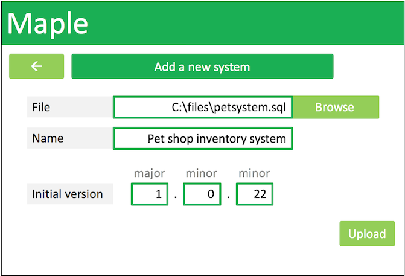
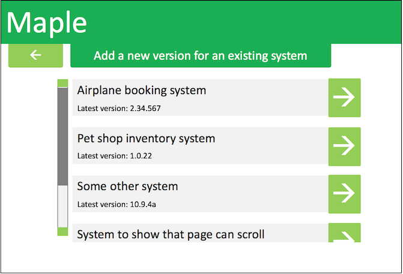
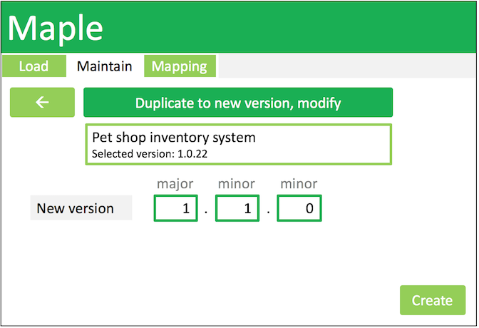

User Interface Prototypes
We designed some non-functioning prototypes for our user interface which are shown below. We will use these to produce functioning prototypes which can be seen on the Prototypes page.

Page which guides the user through loading systems

Fields to fill in before a new system can be properly loaded
Meets Requirements: RQ15, RQ2, RQ4, RQ3, RQ4, RQ7, RQ11, RQ13
Select an existing system to add a new version to

Fields to fill in before a new version of an existing system can be properly loaded
Meets Requirements: RQ15, RQ2, RQ4, RQ3, RQ4, RQ7, RQ11, RQ13

Selecting an existing system to update
Select an existing version to update
Meets Requirement: RQ4

Guiding the user through common tasks to update the existing system
Meets Requirement: RQ4, RQ6

Fields to fill in before a duplicate system can be created and modified
Meets Requirement: RQ4

Page to show tables to be modified
**NOTE: ALL TABLE FIELDS ARE MODIFIABLE BY CLICKING**, buttons create empty stuff
Meets Requirement: RQ17, RQ12
Page guiding user through what is required before you can map between systems/versions

Same as above, but one out of two items is selected

Page guiding user through what is required before you can map between systems/versions
Meets Requirement: RQ4

Same as above, but one out of two items is selected
Meets Requirement: RQ4

Table view of mapping page – shows that sections are mapped but not how they’re linked due to information density
Meets Requirement: RQ4, RQ5, RQ10, RQ14

Mapping view of mapping page – shows how sections are mapped, but not unstructured information due to information density
Meets Requirement: RQ4, RQ5, RQ8, RQ10, RQ14